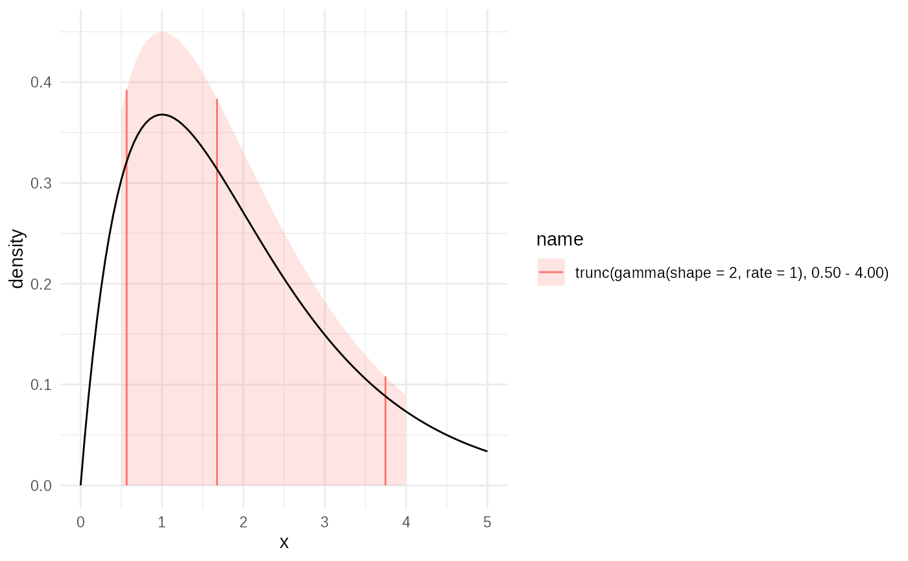

Generates a truncated distribution from an existing distribution dist.
The new distribution is restricted to the interval \([x_{left}, x_{right}]\)
(or \((x_{left}, x_{right})\) if open bounds are intended, though the
quantile function will map 0 to \(x_{left}\) and 1 to \(x_{right}\)).
The probability density function (PDF) of the truncated distribution \(f_T(x)\)
is related to the original PDF \(f(x)\) by a normalization constant:
$$
f_T(x) = \frac{f(x)}{F(x_{right}) - F(x_{left})} \mathbb{I}_{[x_{left}, x_{right}]}(x)
$$
where \(F\) is the original CDF and \(\mathbb{I}\) is the indicator function.
Consequently, the CDF \(F_T\) and quantile function \(Q_T\) are:
$$
F_T(x) = \frac{F(x) - F(x_{left})}{F(x_{right}) - F(x_{left})}
$$
$$
Q_T(p) = Q(F(x_{left}) + p \cdot (F(x_{right}) - F(x_{left})))
$$
where \(Q\) is the quantile function of the original distribution.
This function implements these transformations for the p, q, and r functions
of the resulting dist_fns object.
Unit tests
shape2_gamma = as.dist_fns(pgamma, shape=2)
g2 = truncate(shape2_gamma, 0.5, 4)
testthat::expect_equal(
format(g2),
"trunc(gamma(shape = 2, rate = 1), 0.50 - 4.00); Median (IQR) 1.68 [1.08 — 2.46]"
)
testthat::expect_equal(
g2$p(0:5),
c(0, 0.212702667019627, 0.615716430100344, 0.868531239886668, 1, 1)
)
testthat::expect_equal(g2$q(seq(0, 1, 0.2)), c(
0.5,
0.971743593113941,
1.42711359317907,
1.95304152540128,
2.6642447272259,
4
))
g3 = truncate(shape2_gamma, NA, 4)
testthat::expect_equal(
format(g3),
"trunc(gamma(shape = 2, rate = 1), 0.00 - 4.00); Median (IQR) 1.54 [0.899 — 2.35]"
)
g4 = truncate(shape2_gamma, 2, NA)
testthat::expect_equal(
format(g4),
"trunc(gamma(shape = 2, rate = 1), 2.00 - Inf); Median (IQR) 2.97 [2.42 — 3.87]"
)
Examples
shape2_gamma = as.dist_fns(pgamma, shape=2)
g2 = truncate(shape2_gamma, 0.5, 4)
plot(g2)+ggplot2::geom_function(fun = ~ dgamma(.x,shape=2), xlim = c(0,5))
